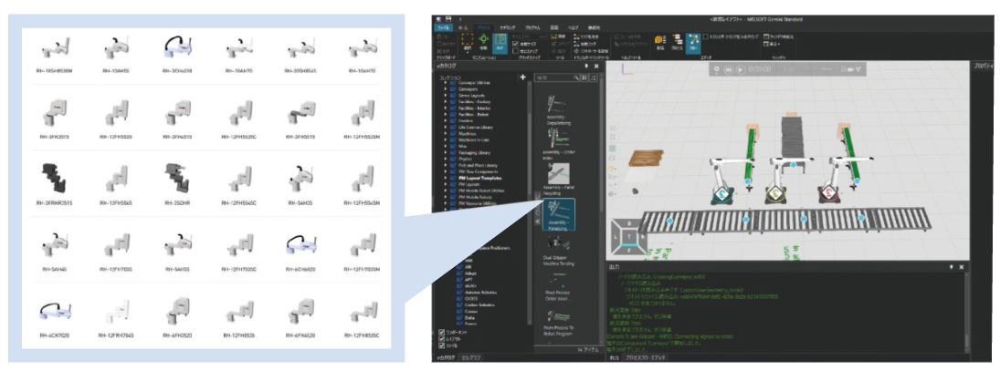
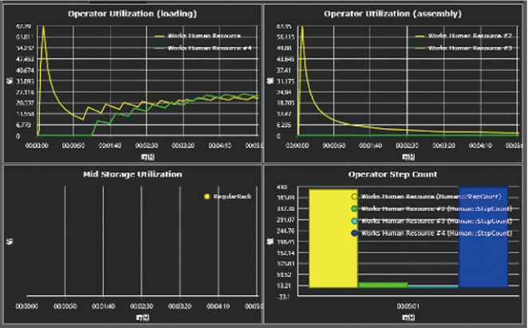

Simulation tools MELSOFT Gemini

Usages of 3D Simulator MELSOFT Gemini
3D Simulator has a variety of different usages.
Method1
Production design
To build a line with high productivity
Line layout verification
Able to verify and visualize productivity before actual operation
Possible to build a line with high productivity!
Method2
Machine design
To prevent rework due to miscommunication between machine design and control design
Machine specification verification
Able to create models for simulation from 3DCAD and share machine operations in animation form
Significant reduction of labor time for rework and better DR efficiency!
Method3
Pre-adjustment/ confirmation
On-site machine adjustment takes an exponential amount of time and start-up is significantly delayed
Control program verification
Able to verify mechanical operations in a digital space in advance using a control program
Shorter on-site adjustment period!
Method4
Service & maintenance
To swiftly recover from equipment faults
Problem verification
Able to reproduce the status of lines and machines remotely
Swift shop floor recovery is possible!
Method5
Sales
To convey the value of the equipment we make to customers
Communication support
Able to show how products work in various forms (3D, VR, animation)
Smooth mutual understanding and speedy business talks!
Method6
Management
To increase return-on-investment (ROI) when installing new production equipment or expanding
Support for trial calculation of investment cost for equipment/workers
Able to trial calculate investment cost required for equipment and workers based on simulation results
Optimal investment is possible!
Utilization Method 1
Line layout verification
Build & verify layouts from the eCatalog
Layouts can be built and verified by simply dragging and dropping the necessary parts for line verification from the library and performing easy settings. Components that can be used in eCatalog
Visualize & analyze using a chart/statistics function
Simulation results can be visualized and analyzed to identify bottlenecks and changes in operating ratio.
Productive line set up and verification is made easy through arranging models
from an abundant eCatalog and utilizing a statistical analysis function
Utilization Method 2
Machine Specification Verification
Operations can be set up by importing 3DCAD data, setting up the mechanism, then using the script in MELSOFT Gemini. This makes it possible to create and simulate machine operations even if ladders and other programming are incomplete. This streamlines the task of alignment conventionally using 2D drawings and timing charts.
"Significant reduction of labor time for rework" is possible
by sharing machine operations and reducing miscommunication between designers
Utilization Method 3
Control program verification
Direct connection to various simulators and FA equipment made by Mitsubishi Electric improves the accuracy of mechanical collision checks. Through connection to other companies’ equipment and simulators via an OPC Server, control logic verification is possible regardless of the equipment or machine.
"Reduced on-site adjustment time" by improving
the level of control logic completeness beforehand
Utilization Method 4
Problem verification
Status at time of error is reproduced as a 3D model based on log data.
Swifter troubleshooting is possible by combining ladder monitor display, waveform display, and image data display.
Equipment operations can be reproduced in. MELSOFT Gemini based on log data and troubleshooting can be performed remotely,
thereby making early shop floor recovery possible
Utilization Method 5
Communication support
When proposing machines and systems developed in-house to customers, by showing them how products work on 3D Simulator, information can be shared without misunderstanding.
"Smooth mutual understanding and speedy business talks" are
possible by showing how products work in various forms (3D, VR, animation)
Utilization Method 6
Support for Trial Calculation of Investment Cost for Equipment/Workers
When installing new production equipment or expanding existing lines, verification via simulation of multiple patterns makes it possible to grasp the necessary number of robots, processing machines and AGVs, as well as the necessary number of workers, thus enabling the trial calculation of optimal investment cost.
Optimal investment is possible! by trial calculating investment cost required for
equipment and workers based on simulation results